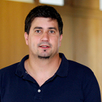
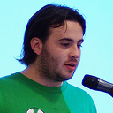
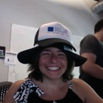

Know the speakers
-
Sven Fuchs and Josh Kalderimis
Travis CI - Distributed, Continous Integration for the Ruby community
Sven Fuchs is an experienced software developer and active open source contributor currently based in Berlin, Germany. He is well known among the Rails community members for leading the I18n project, a gem shipped with Rails to cover internationalization needings. He is well known to be to be one of the core members of the Travis CI development team.
Josh is a top-30 Ruby on Rails contributor and has been working with the framework since 2008. He maintains a massive amount of open-source Ruby projects, including multi_json, linkedin, faraday_middleware and his own completeness-fu. He's also one of Amsterdam.rb's organizers, and an interregnal part of the Travis-CI team.
Travis CI is an open source continuous integration service for the Ruby community and in this talk Sven and Josh will show us what is the vision behind it and how is it implemented.
-
Paolo Perrotta
Java is from Mars, Ruby is from Venus
Paolo "Nusco" Perrotta has more than ten years of experience as a developer and writer. He worked for domains ranging from embedded to enterprise software, computer games, and web applications. He describes himself as an "Agile Coach, rubyist, Generic Italian Guy, author of Metaprogramming Ruby". We describe him as a powerful speaker, a nice and kind guy and an even better developer.
For Java programmers is difficult to think in Ruby. For Ruby programmers is difficult to think in Java. In this talk Paolo will show us these two different kind of language philosophies and why are not easily interchangeable.
-

Alberto Perdomo
Rails for mobile devices
Alberto has been coding since 1996 and writing software professionally since 2003. In 2006 he started developing web applications with Ruby on Rails and it still is his framework of choice. Other things he has done in the past include design of electronics and developing desktop applications and software for embedded devices.
In 2007 he co-founded AENTOS, a software development company. They develop web sites in Ruby on Rails and apps for mobile devices like iPhone & iPad.
Plenty of people browse the web using very modern and powerful mobile devices but a lot of websites, startups and companies are only caring about the experience on the desktop or think native apps are the only way to go. In fact, if you have optimized your site for desktop browsers, chances are mobile users are having a worst experience than if you hadn’t. Smaller display, slow and unreliable internet connections, poor caching, … are just some of the constraints that developers have to deal with when thinking in terms of mobile browsing.
In this talk he’ll explain the typical issues, how developers can work around them and how they can leverage the fullest potential of mobile devices using Rails, HTML5, as well as other special techniques and tools.
-
Sergio Gil
Five languages in a moment
Sergio Gil (aka @porras) is a developer who once fell in love with the simplicity of the web architecture. Ever since that day, he tries to find that simplicity in everything he does, be it choosing a technology, a user experience approach, a methodology style, or a company. It's no surprise those choices are Ruby, ‘Less is More’, Agile, and BeBanjo. A regular presence in the local rubysphere events and in Conferencia Rails, he's been threatening for years to play ukulele in one of his talks. Maybe the time has come.
“A language that doesn’t affect the way you think about programming, is not worth knowing.” — Alan Perlis
Fortunately, there are plenty of them.
Once upon a time, Ruby blew our minds. That simple, nice, funny, almost naive Japanese little language didn’t only “affect the way we thought about programming” but in the process changed our jobs, our industry, and in some cases almost our lives. Could it be that it is the only language that could have done it, or even do it in the future? That could be the case, but that kind of simplistic and comfortable truths aren’t for rubyists. As it turns out there are a lot of things out there capable of blowing your mind once again.
This humble developer has made a crash course into five of them, not to find The Next Big Thing™, but to find the next simple, nice, funny, and why not naive thing, and is ready to share his conclusions, and challenge his summarizing abilities and tell you something useful about all five of them in 35 minutes. And of course having a good and fun time in the process. May the Source be with him.
-
Jim "Big Tiger" Remsik
60 to 0 MPH in 2.5 Seconds: A Retrospective
"Big Tiger" has several years of government-sector, full life-cycle business process automation projects under his belt before joining the Ruby community via Hashrocket in 2007. Years of experience in leading a maintenance team means he has answered to angry customers and the developers, project leads, and clients responsible. A simple philosophy of building simple software that works as expected emerged from that experience. You will find him speaking at user groups, conferences, and board rooms on everything from agile development tools and techniques to deep technical dives into Ruby or other best in breed technologies.
This talk will be a story of his experience crashing a full size stock car into the blunt end of a concrete wall. This is a true story that happened to him at Columbus 151 Speedway in Columbus, WI. It occurred in a recurring event, which has been featured on Ripley's Believe It or Not, called the Back-up Race where up to 12 cars race backwards around 1/4 mi. asphalt oval at speeds up to 65 MPH.
If you want to research this you can visit his YouTube channel. Using this example, he'll try to explain us the risk involved in what we do today and how to protect ourselves and when to live on the edge.
-

Nicolás Sanguinetti
Let's Have a Cup of CoffeeScript
Nicolás (probably better known as foca) has been working on web applications for 10 years. He started out as a front-end developer, and eventually moved into the back-end space, though he consideres himself a generalist, and likes to work on the full stack.
He usually hacks on ruby and javascript open source things at http://github.com/foca. He lives in Montevideo, Uruguay, where he works as an engineer for Cubox (http://cuboxsa.com)
CoffeeScript is a great way to write javascript. It provides many abstractions that simplify the language, and a few syntax niceties that make it much less noisy than pure javascript.
In this is introductory talk, we will go through a few examples of code, seeing how it compares to JavaScript and presenting the language's features, and hopefully inspiring us to go and try it out!
-

Renée De Voursney
How I Learned to Smell Code
Renée is the lead developer at Blue Box Group, a managed Rails hosting provider located in Seattle, Washington, USA. Renée’s skills intersect software development and business process improvement. When she is not building bug-free, infinitely scalable, and perfectly crafted software, you can find her climbing mountains or jumping off cliffs in Zimbabwe.
In her own words, this talk will cover "my story, from apprentice-pup to journey-hound, complete with anecdotes of both fragrant and rank code. I have had to climb massive rock walls, program in .NET, and boldly go where no coder would want to go! Much of my time is spent wearing anti-noxious code gas masks slowly converting pungent code to code with a pleasant aroma. What learning scents are beginners assaulted with when embarking on their olfactory training, training to become as sharp as a bloodhounds? Let us explore how following and teaching design patterns brings out the olfactory-affability of our code. We will explore how this leads to emergent designs which heighten our senses to the scent of beautiful code."
-
Felipe Talavera Armero
Ruby and Rails, as secret weapon to build your service-oriented apps
Felipe is a passionate and advocate software developer and he's been working with rails since the early days of the framework. He's taken part in some adventures as entrepreneur as well as in start ups like strands. At this time, he is busy building financials tools to help students save some cash at peertransfer.com
Properly designed large applications, partitioned into cooperating services, can be far more agile than monolithic applications. Services make it easy to scale team size. As the code base of an application gets larger, it gets harder to introduce new developers to the project. When applications are split into services, developers can be assigned to a specific service or two. They only need to be familiar with their section of the application and the working groups can remain small. Ruby malleability to work as glue and Rails easy to build API's are perfect to build those services.
During the session we will review techniques, tools, libraries and code examples related to the construction and roll out of this kind of systems.
-
Alex Sharp
Practical Ruby Projects with MongoDB
Alex hacks ruby, mongodb and commerce at a super-awesome company called Zaarly. Before joining Zaarly, he served as the lead developer at a health care startup based in Pacific Palisades, CA called OptimisCorp. He is particularly interested in the NoSQL movement, the art of refactoring, domain modeling, and systems automation with puppet.
Among other open source contributions, Alex is the author of Bunyan and Papermill, two libraries for working with MongoDB.
In addition to hacking, Alex enjoys shredding fresh powder, gourmet coffee and being an amateur foodie. He does not enjoy referring to himself in third person, because it sounds weird. He currently lives in sunny Los Angeles, CA, blogs at alexjsharp.com and tweets as @ajsharp.
This talk focuses around interesting and practical uses of MongoDB in a production setting. We'll explore business domains ripe for use of MongoDB as a primary datastore, and we'll also explore practical uses of Mongo in a secondary role to support our existing applications. In doing so, we'll explore in some detail some of the advanced features of Mongo, such as map/reduce, capped collections, sharding and replication.
-
Javier Ramírez
Five years of Rails, from Spain with <3
Javier perfectly describes himself: "Everybody has a past, and mine is one of 15 years developing software and teaching other people how to do it. I find myself in no man's land on the engineering versus craftsmanship debate, finding virtues and caveats on both sides. I would say I'm a creative technician with an agnostic and pragmatic approach to problem solving.
I've been using, recommending, enjoying and hating a number of different languages, tools and techniques along these years, but since 2006 Ruby on Rails and its ecosystem is my favourite platform. The flexibility of both the language and the framework lets me try new things really quick and change my mind often, without much ado.
I'm an active member of the Ruby on Rails scene, participating in -and often organizing- meetups and conferences whenever I can. I'm also the author of the book "Aptana RadRails: And IDE for Rails Development" which was not a best seller, but it was fun to write.". You can get in touch via @supercoco9 or http://javier-ramirez.com
In this talk he will review five (wonderful) years of Rails for the Spanish community, so often undervalued by us ourselves.
-
Amy Woodward
Humpty-Dumpty: When the Cloud Falls Down
Amy Woodward started coding in Ruby in 2006, after forays into C, Java, and other clunky languages. She's worked with teams at Pivotal Labs and Google, as well as a Silicon Valley startup or two. She now works at Engine Yard, making AppCloud more awesome.
During Amazon's EC2 outage (April 21st-23rd of 2011), many companies found their sites down for hours, even days. In this session, Amy will briefly cover the outage and what made it so severe. She will talk also about how Engine Yard coped with the outage, and the steps they took to keep our dashboard up and get (and keep) our customers online. And of course about all the lessons they learned that day.
-
Pablo Villalba
A SaaS startup: lessons learned
Pablo Villalba (@micho on Twitter) started a collaboration software company called Teambox. Today it's one of the biggest productivity apps online, employing 15 people and serving 100.000 professional users.
He has been a lead developer in the early days of Teambox, and has lately been working on all the other aspects of the business: marketing, sales processes and funding.
Teambox has acquired over 100k users in the last year. In this talk he will cover aspects like funding, legalities, billing, scalability, product design, marketing and organization in a startup.
-
Julian Fischer
Migrating a development company to Rails 3.x
Julian Fischer, CEO of Avarteq GmbH and associate lecturer at the University of Applied Sciences HTWdS in Saarbrücken, Germany, is delivering the lecture, Ruby on Rails. His main focus is about developing architectures for scalable and distributed web applications as well as the creation of hostings infrastructures such as RailsHoster.de and Enterprise-Rails.com.
Based on the experience of migrating a 14 people development company to Rails 3 this talk is about challenges, obstacles and opportunities of Rails as a fast evolving technology. Among others, with him we’ll have a look at how to programming, training of employees and convincing customers. Don’t miss those secret Jedi tricks to quickly get rid of all this legacy Rails 2.x stuff in your daily work!
-
Raimond García
Workshop: Welcome to Rails
Raimond García is a freelance web developer with 5 years of experience in the Rails world; he collaborates with ProRuby and works from a really funny coworking space, utopic_Us. Recently he began to teach Rails to others and discovered that he loves doing it! In his spare time he likes involving himself in revolutionary events to make a happier society.
In this introductory workshop we will philosophize about the wonders of Rails world. We will implement the mythic 'Hello World', taste the delicious scaffolds, play with links and make an online deployment using Heroku.
It's important to have Ruby on Rails properly installed before starting this workshop, so contact Raimond at voodoorai2000@gmail.com for further help.
And if you finish early we'll have some Bonus Exercises, Legendarios!
-
Arnau Sánchez
Workshop: Functional Programming with Ruby
Arnau is a freelance developer (he does mainly RubyOnRails websites for a living) with a special interest in the Free Software philosophy, the GNU/Linux operating system, scripting (Python, Ruby, Javascript, Lua, ...) and functional languages (Haskell, Erlang, ...). More: http://www.arnau-sanchez.com/en
In a little workshop, Arnau will show us the basics of the Functional Programming paradigm and then concentrate on how to apply it to write more clear, maintainable code with Ruby.
-
Simon Tokumine and Javier Arce
Workshop: Node.js, Backbone.js and Geospatial Applications for Rails Developers
Simon likes using computers to solve real world problems and he is a believer that a strong technical foundation should be a core competency in our rapidly developing, data rich world. At UNEP-WCMC he was the technical lead on the Ruby/Rails Protected Planet project, and is currently enjoying using Node.js to make mapping dynamic data sources as real-time and collaborative as possible for the latest Vizzuality projects. More: http://vizzuality.com/team/stokumine
Javier is a polyglot programmer well-versed in Ruby, JavaScript, Objective-C, CSS and HTML; as well a self-taught illustrator and designer. He's currently working at Vizzuality as a Front-end developer. More: http://vizzuality.com/team/javier
They both intend to deliver a 4-hour javascript workshop for Rails programmers using Node.js and Backbone.js. They'll introduce the attendees to both of those frameworks, talk about testing in JavaScript and build several small apps to apply the lessons.
Sponsors
gold
silver

supporters:
1uptalentWould you like your company to appear RIGHT HERE? Get your supporter ticket now or contact us for more information on our exclusive sponsorship bundles (PDF).